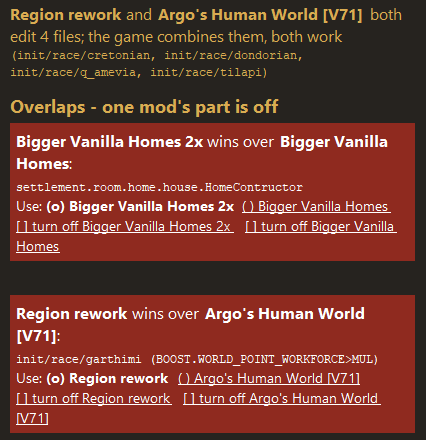

Most mod overlaps are resolved automatically, down to part of a method
ShippedWhen two mods change the same game code, the loader keeps both changes, piece by piece inside the method, instead of dropping a whole class. Songs of Blood and Empire + Syx Together: 12 of 12 shared pieces combine.
It only combines what it can prove is safe:
- code built by different compilers counts as unchanged
- added set-up lines, early exits, wrapped values, try/catch blocks, moved method bodies
- "only in my mode" checks from two multiplayer mods; tiny pass-through helpers
- a side panel shows what was combined; data files the game combines itself show in yellow
- for each real clash pick "Use A" or "Use B", or turn one mod off, right in the panel
- tested against all 745 Workshop items: 867 overlaps combine; 171 classes stay blocked across 30 mod pairs (21 mods); SyxSpeed clashes with nothing

- next: SyxSpeed applies its tweaks on top of whichever mod owns the code (planned)
for modders
#ML.3 #ML.11 #ML.12 #ML.13 #ML.14 #ML.44 #ML.47 #ML.48 #ML.49 #ML.50 #ML.51 #ML.52 #ML.53 #ML.54 #ML.55 #ML.56 #ML.57 #ML.58 #ML.59 #ML.60 #ML.61 #ML.62 #ML.63 #ML.64 #ML.65 #ML.74 #ML.75 #ML.76 #ML.77 #ML.78 ConflictPanel, AutoMerge (addPins), src-merge/MethodMerge, ClassMerge.bodyMoved, merge/Normalize, Effects, Forwarders, HarmlessOverlaps, startupDialog, merge/CensusSurvey, tools/modloader/census_*.py; docs/research/modloader_merge_blockers.md §8, modloader_data_overlaps.md; checks C15-C22 + HotSpot verifier; left: Eight Lords Council FinderThread.prep